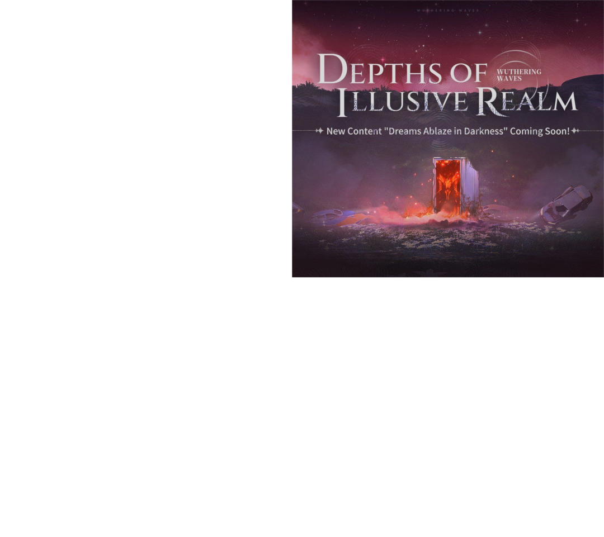

 Новый сезон Глубин Иллюзорного Царства Время проведение 04.07.2024 - 05.08.2024 Условия участия: 17 уровень и выше Пробные персонажи: Цзиньси Чан Ли Цзяньсинь Саньхуа Награда: 1000 Астирт и другие ресурсы